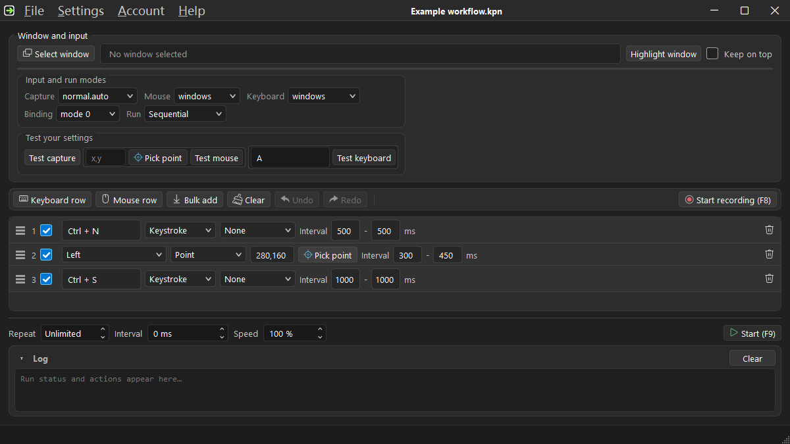
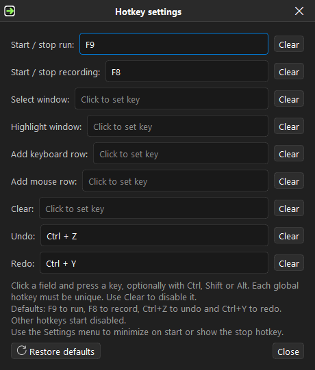

Describe the workflow you want
Tell your agent to bind Notepad, add a Ctrl+S action, or change the delay to two seconds. It can handle the action list, coordinates, and F9.
Windows automation tool
Create keyboard, mouse, and image recognition actions in one editor. NextCore lets you switch between sequential and independent execution. Use MCP or DeepSeek Harness to ask an agent such as Cursor or DeepSeek to bind a window, edit actions, and run scripts. New users can try it without signing up for 15 days. Set up MCP or DSH →
Choose English or Simplified Chinese in the installer. To switch later, open Settings → Interface language and reopen KeyPresserNext.


Agent
If clicks or image recognition fail or you need help binding a window, ask an MCP or DSH agent to walk through setup, run tests, and change modes.
Tell your agent to bind Notepad, add a Ctrl+S action, or change the delay to two seconds. It can handle the action list, coordinates, and F9.
Bind windows, record, edit actions, test input, and save .kpn… and everything else you can do in the app. Changes appear immediately in the main window, just as if you made the changes manually.
If keys, clicks, or image recognition fail, describe the issue to your agent. It can change capture or input modes, enable Always on Top, and run tests. It can help you choose between dx or gdi.
Ask your agent how to bind a window, record a workflow, or set up MCP. It can walk you through the steps in the app.
Copy the configuration into an MCP client such as Cursor, Codex, Trae, or Claude Code. The tool is named keypressernext to control the app.
Install the plugin from the menu and restart to control the app from your local DeepSeek Harness agent.
Setup
mcp.jsonkeypressernext to bind windows, edit actions, record, run, and test input..kpnWorkflow
F8 to record · F9 to run · F1 Help
New users can try it for 15 days without signing up. See Account → License / Sign In.
Click Select Window to bind it. Use Highlight to confirm the target.
Test screenshots, mouse input, and keyboard input to make sure the selected modes work with the target window.
F8 to record or add keyboard and mouse actions manually. Bulk import is supported.
Save .kpn, F9 to start. Adjust the run count, interval, and speed as needed.
Changing modes when keyboard or mouse input fails
Screenshot normal.auto · Keyboard and mouse windows · Binding mode 0
Switch keyboard and mouse input to dx, or turn on Always on Top and use normal
Test screenshots first. For ordinary windows, try gdi. For fullscreen apps or games, try dx
Features
Build keyboard, mouse, and image recognition actions in one editable workflow.
Manage keyboard, mouse, and image recognition actions in one list without copying configurations between tools.
Recordings become editable actions. Adjust timing, coordinates, and key-down or key-up events afterward.
Run actions in order or loop them independently. Independent mode supports key holds.
Select, highlight, or pin a window. Test screenshots and keyboard and mouse input before starting.
The new engine supports shareable configurations and assets and works with older 16-bit color applications.
| Capability | Professional | Next |
|---|---|---|
| Design | Separate tools for each module | Unified action editor |
| Recording | Fixed playback | Editable key-down and key-up events |
| Execution | Each module has its own execution logic | Sequential or independent execution |
| Agent | — | MCP / DSH |
| Configuration | Separate configuration for each module | .kpn + assets |
FAQ
keypressernext) and DSH.mcp.json. Install Node.js locally and run the agent under the same Windows account. Tool name: keypressernext.dx / normal or enable Always on Top. For image recognition, test screenshots first and check the log. If MCP or DSH is connected, ask your agent to help switch modes.KeyPresserNext.exe / NextCore.dll and add the installation folder to your antivirus exclusions.KeyPresserNext.exe "D:\foo.kpn" --autorun. If the app is already open, the existing window is brought forward.